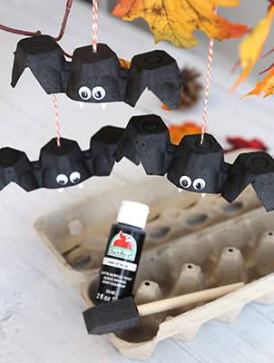
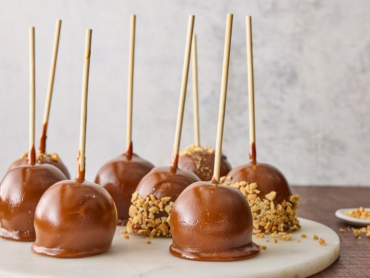
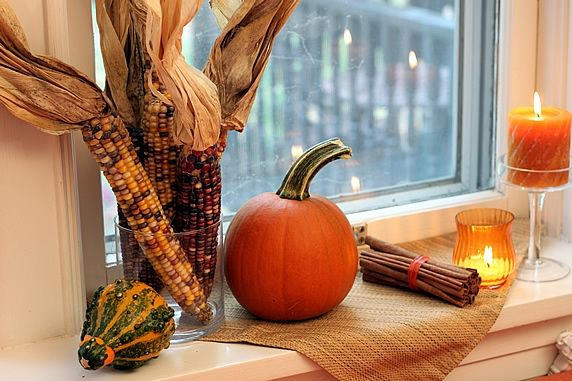
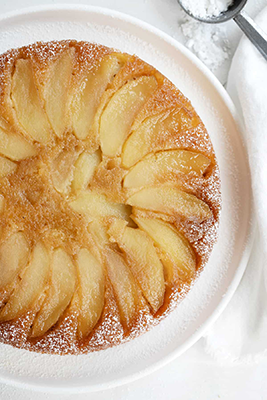

Crafts
My favourite fall/halloween craft is making home-made bat decorations! They are super fun and easy to make!

Here are the supplies you'll need:
- Finished or unused egg cartons
- Black and white acrylic paint
- Brushes
- Scissors
- Glue
- googly eyes
- string
INSTRUCTIONS:
- Take your scissors and cut out the egg carton cups one by one.
- Cut each individual cup to shape the body. Its wings should be present.
- Take your black acrylic paint and use your brush to paint the body.
- Let the paint dry, it should take a few minutes
- After drying, glue the googly eyes on your bat
- Take your white acrylic paint and a smaller brush to paint the teeth. Let dry.
- Cut a piece of string, using scissors or a knife, puncture a hole where the string needs to go.
Now your bats are done! They can be hung up anywhere in your house!
Treats
The best fall treat to share with family and friends is the classic caramel apple!

INGREDIENTS:
- 8 apples
- 8 chopsticks
- 2 cups brown sugar
- 1 can condensed milk
- 1 cup butter
- 1 cup corn syrup
- 2 teaspoons vanilla
INSTRUCTIONS:
- In a pot, bring water to a boil. Dip the apples in for a few seconds to remove the wax. Dry afterwards.
- Insert a chopstick into the top of your apples.
- In a saucepan, combine the brown sugar, condensed milk, butter, and corn syrup. Stir constantly over medium-high heat until the mixture comes to a boil. Thermometer should read 120°C
- Remove from heat and stir in the vanilla.
- Dip your apples into the mixture to coat them.
- (optional) Dip the caramel apples in your coating of choice, I prefer crushed nuts.
Now you can enjoy your delicious caramel apples! If you would like more ideas for treats for the fall season, check out this website! https://www.foodnetwork.com/recipes/photos/fall-dessert-recipes
Decorations
If you need decoration ideas for fall, here is the perfect place. These items are guarenteed to bring the warmth of autumn to your home!

The Perfect Fall Recipe
Behold! The ultimate upside-down apple cake featuring maple syrup! The most delicious cake for fall!

Ingredients:
- 2/3 cup maple syrup
- 2-3 large apples
- 1 1/2 cups flour
- 3/4 teaspoon baking powder
- 1/4 teaspoon baking soda
- 1/2 teaspoon salt
- 1/2 cup unsalted butter
- 1/2 cup sugar
- 2 large eggs
- 1/2 cup milk
- 2 teaspoon vanilla
INSTRUCTIONS:
- Preheat the oven to 350° F. Grease your round cake pan and set on top of a baking sheet.
- In a small saucepan, heat maple syrup over medium heat until it begins to bubble. Pour into the cake pan.
- Peel, core, and slice apples. Arrange apple slices in a single layer over the syrup in the cake pan.
- In a medium bowl, whisk together flour, baking powder, baking soda, and salt.
- In a beater, mix the butter and sugar until fluffy for about 3 mins. Introduce the eggs one at a time. Add vanilla and the dry ingredients with the milk. Mix until smooth.
- Pour the batter over the apple. Place cake pan on top of baking sheet
- Bake for about 30-40 minutes or until a toothpick inserted into the center comes out clean.
- After this, cool the cake for about 45 minutes. Once cooled, place a plate on top and flip it upside down and remove the pan. Garnish with powdered sugar.
Voila! You now have your delicious amazing upside-down apple cake! Enjoy!